Zoe & Molly: Choo Goo Release (0.1.0)
- Category
- zoe-and-molly
- Timestamp
- Sun, 27 Nov 2016
So I made my first real release of Zoe & Molly on GitHub, specifically Release 0.1.0 "Choo Goo." I call it that because there's a lot of slime and also a train minigame. Please keep in mind this is a rough draft of a very incomplete game, an early sneak peak. Here's the official release video:
Zoe & Molly is a game based off of my dreams, I encourage you to read about that in my first blog post about Zoe & Molly.
I try to Tweet regularly to the #zoemolly Hashtag on Twitter.
How can I play?
Checkout
the Zoe & Molly v0.1.0 download page
and follow the instructions in the README.md/on the page there.
Hows it made?
I have a lot of details on that on the Zoe & Molly GitHub repo itself, but in short, I use a game engine called OHRRPGCE.
The train minigame
I had to introduce some scripts in this release, namely for the minigame. The minigame is a simple board game where you roll the die and you get to move that many spaces from your current position in any direction. However, you have a limited number of die rolls. You collect points by ending your turn on a dot/green tile, thus collecting that tile's point. You win by making it to the goal (yellow tile) with points, on your last roll.
end roll on a dot to gain point. play until out of rolls, but if out of rolls & you're not on the goal square, you lose/no points #zoemolly pic.twitter.com/cMWBhH91d1
— SpaceSlimeComplexity (@LilySeabreeze) November 24, 2016
The script that makes the magic happen is scripts/trainy.hss, which is written in
HamsterSpeak (AKA "plotscripting"), something specific to
OHRRPGCE.
Some interesting bits about HamsterSpeak:
- There are no lists or arrays, just global variables #0 to #16383. I used a "fake array" to accomplish keeping the move history in the minigame. This method is documented in the OHRRPGCE Wiki's "Fake Arrays" article
- Likewise, strings are stored like globals, whereas a string is created with a manually specified integer identifier, and is later referenced by such.
th i sis the same asthis
If you wanna read more about HamsterSpeak, be sure to checkout the Official Dictionary of Plotscripting Commands.
I also wanted to thank the generous people in the OHRRPGCE IRC channel (#slimesalad on Espernet), including the creator Bob the Hamster, SDHawk, and Harlock199X for their input and assistance. Some funny tricks used in this script:
- To see if the goal is achieved I check if the train is over a "vehicle type a" tile (if the player is out of rolls)
- To gain points, the train moves under dot NPCs. Then, a check at the spot of the train NPC is done, for the second NPC result in that area, whereas 0 is the backmost and >0 is increasingly foremost.
- The way spaces you're allowed to move is calculated by keeping track of directions/ keys pressed, so that if the opposite is pressed, the history can be undone and more movement regained. The spaces are stored in a series of global variables with a "fake array" (as mentioned above). Once you return to the original roll value, the history is just reset (this solved some bug, I can't remember what...)
I also have a secret/alternate spriteset for this, that includes a Burlington Northern SD45 as the train/player's piece. I plan to use this in a later part of the game (I'll probably touch up later, too).
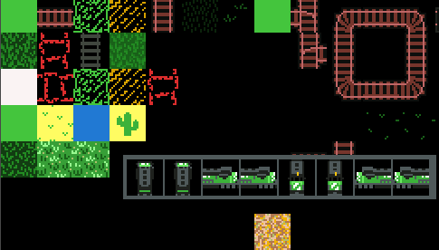
Where to go from here
I've been thinking what I'm going to do with that Daisy character, if I wanna keep the small walkabout characters for battle, or if I wanna go nuts and make Daisy the "Zoe" character, and workon battle animations for both Zoe and Molly.
I need to redo a lot of the writing (at least to have characters talk in a more interesting way than "I AM THING FOR THIS PURPOSE),
I'd really like to make some cutscenes and an intro. Start letting people load and see a title screen.
I'd also like to make sure I'm intelligently managing my palettes more. The colors in the crayon world need a real palette.
Other stuff I wanna touch up on before I make a more official "demo" is better sound effects, bug fixes, add cutscenes (namely intro cutscene), add title screen, allow people to load saves, polish the minigame.
Eventually make an portable computer that's like a gameboy but takes floppies, so you can save on the fly. But, I want to make it so in some parts, someone steals your floppy so you can't save.
Make slime monsters appear once Zoe joins (in random encounters; by tag). Attacking slime with slime either heals or makes slimes bigger; hurting slimes splits them into smaller pieces until they die.
Pictures!

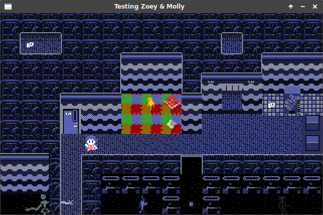
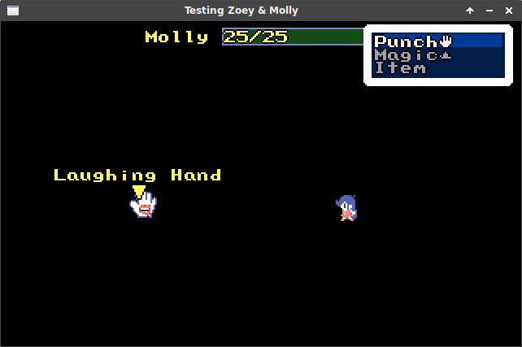
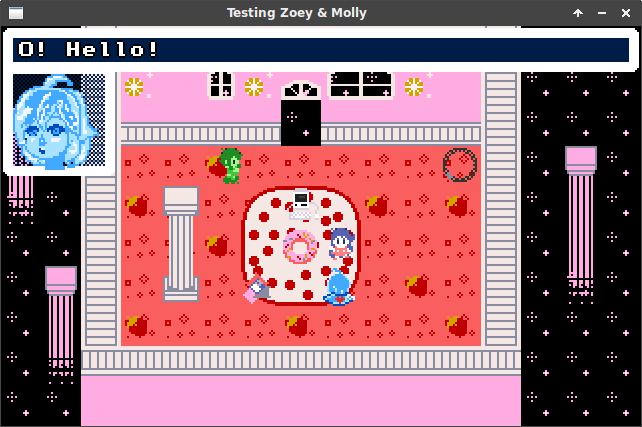
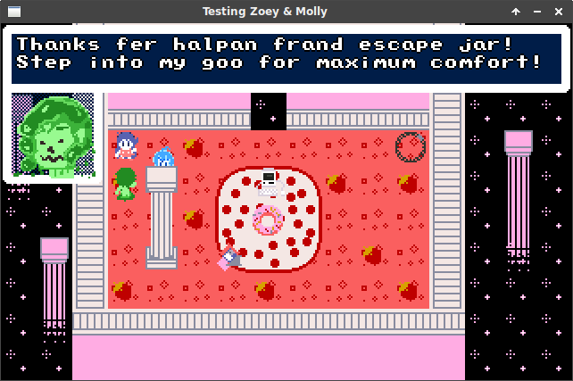
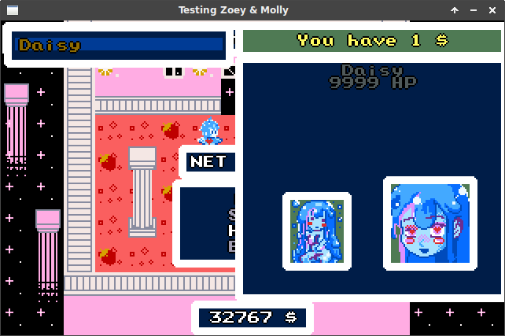
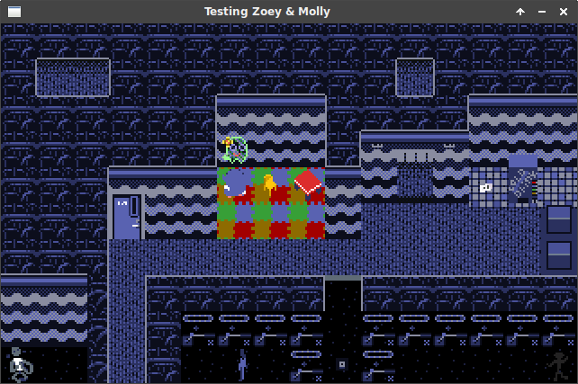
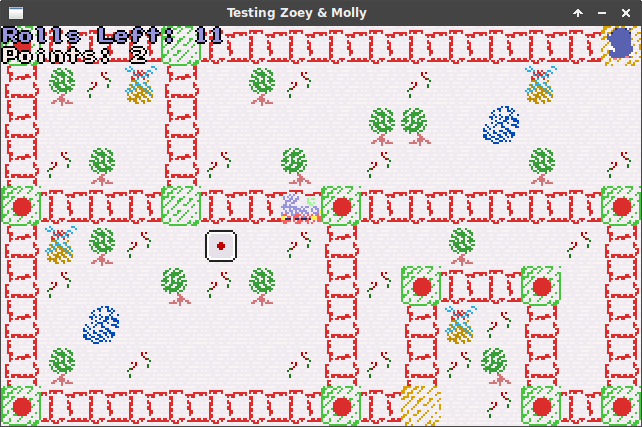
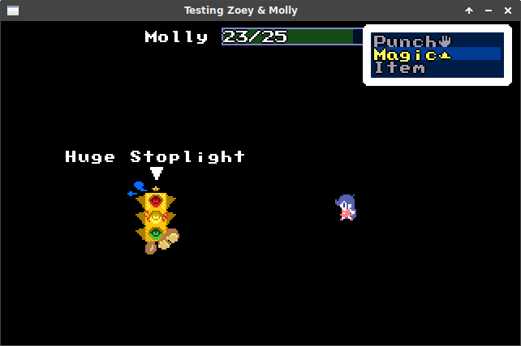
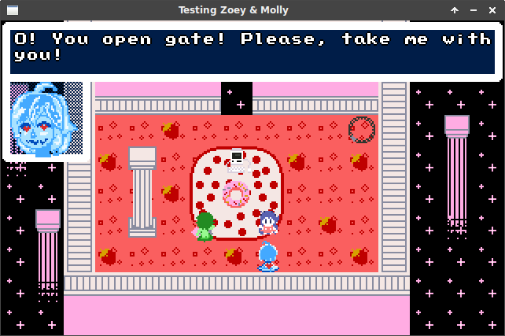
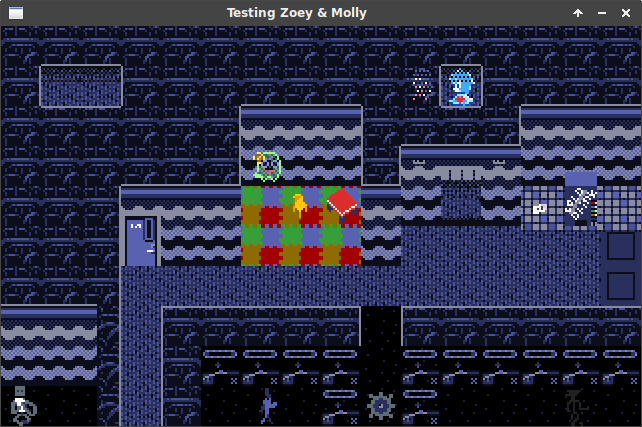